Working proposal
The logo
YOKOS set in Inter SemiBold, the same grotesk as everything else on the site. After the name sits a small night blue square. It is the evidence badge, reduced to a full stop.
The reasoning: this brand speaks in plain sentences and grades its own claims. So the mark is a period, not an exclamation. No symbol, no moon, no leaf. The most honest element on our label, the grade badge, is the identity.
Primary lockup
On night blue

One color reversed, for packaging seals, shipping tape, and anywhere the background is the accent.
The mark alone
The badge square carrying the Y. Used as the browser tab icon, and later as an app icon or capsule jar seal. Shown at 64, 32, and 16 pixels.
Where it is applied
- Site header on every page, replacing the text wordmark.
- Browser tab icon on every page.
- Files in the repository: logo.svg, logo-paper.svg, favicon.svg. All vector, all one or two flat colors, no gradients.
This page is a working proposal and is not linked from the site navigation. Delete logo.html once decided.